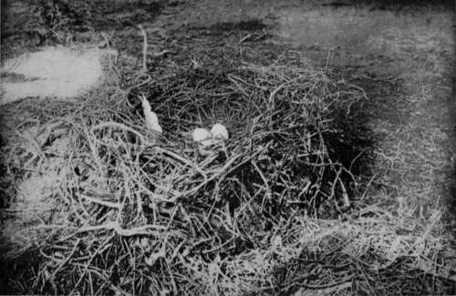
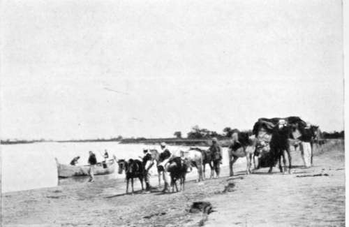
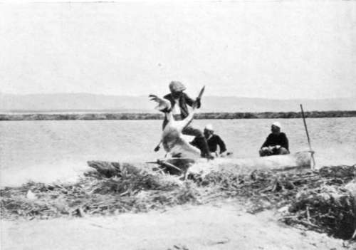

The Quest Of The Pelican : Albania. Part 9
Description
This section is from the book "Bird-Hunting Through Wild Europe", by R. B. Lodge. Also available from Amazon: Bird-Hunting Through Wild Europe.
The Quest Of The Pelican : Albania. Part 9
There was no great difficulty in approaching the birds. Taking care to move slowly and quietly, and not to cause them undue alarm at first, I found it possible to advance nearer and nearer, taking photographs at each stopping-place, and then crawling a little nearer for another batch. In this way they ultimately permitted me to come within twelve or fifteen yards. If sometimes they left their nests it was only for a short distance, and they soon returned and resumed their places on their eggs, apparently satisfied that I was not in any way dangerous.
Nest Of Pelican (Telecanus Crispus)
It was a great satisfaction to find myself at last at such close quarters and on such familiar terms with these birds, which had evaded my pursuit for a whole month, and to be able to watch the habits of such a wary and comparatively little known species -little known, that is, of course, in a wild state, Pelicans in captivity being very common objects in all zoological gardens.
The nests were usually in groups of six or eight together, some of them quite small and flat on the ground-mere flat-trodden rings of sticks; but in each group there were generally one or two considerably higher than the rest. These were well and completely made of sticks and about two feet high-very similar to a Cormorant's nest, but better made and with a deeper hollow. Two eggs appeared to be the full clutch ; these were long and white and chalky, but by this date, May 4, the great majority of the nests contained young birds. However, nine clutches of eggs were obtained, and a few more might have been taken. As these were fairly fresh it is probable they were second layings. A great number of the young were as large as their parents, and were swimming about in the lagoon, so it is evident that they must begin nesting operations very early in the year. Others were still in the nests-a few only a day or two old, others as large as a goose. Many young were scattered over the island, sitting on the sand ; the smaller ones progressed by crawling, helping themselves along with their wings.
Those in down presented a curious appearance. Their colour was a dull, dirty white, with leaden-coloured beaks and feet, and small pouches of the same colour. These young Pelicans made a constant moaning sound like the lowing of cows, or as Bdescribed it, like buffaloes.
The stomach of one of these young birds in down which I skinned was enormously distended, and contained a large double handful of what looked like vegetable matter. It was difficult to imagine that it could have proceeded from a fish diet, but rather resembled the contents of a goose's stomach after grazing in a field. I had several opportunities of watching the young being fed by their parents. Naumann says^ that Pelecanus onocrotalus feeds its young from the pouch. In the case of Pelecanus cris-pusy however, the young bird inserts its whole head down the parent's throat much lower than the opening of the pouch. In fact, the point of the young bird's beak could be distinctly seen pressing from inside at the base of the old bird's neck. In this observation I was corroborated by B-, who watched with his glass from a neighbouring islet on which were also many nests. His description of what he observed exactly corresponded in every particular with what I saw myself as described above.
Our Party Preparing To Cross An Albanian River
Landing The Pelican
Photographs by Baron Bornemiszal
The old birds frequently yawned, stretching their necks and beaks upright, at the same time arching their lower mandibles, which are exceedingly flexible, into the shape of a hoop. It may be perhaps that this is an attempt to dislodge the numbers of parasites, like intestinal worms, which adhere in large numbers to the inside of the pouch. Large bunches of these worms were found inside the pouch of an adult female which was shot and skinned.
The peculiar character of the skin was very noticeable. It was porous and cellular to an extraordinary degree, resembling nothing so much as a series of innumerable air bubbles. Even the body had large air cavities, and the bones were very hollow. This porosity no doubt helps to support their huge bodies in the air, and so must serve a most useful purpose during flight. They fly well and strongly, with the head drawn back and the beak resting on the doubled-back neck.
This colony had its parasites in the shape of Hooded Crows (Corvtis comix) and Gulls (Lanis cachinnans) which walked about among their huge hosts in a most familiar, not to say impudent manner. They no doubt act as scavengers, and devour the fish dropped, and also the eggs, and those young birds which are dead in the nests. Eagles also were described by the fishermen as spending whole days devouring the young Pelicans, and we found the remains of a nearly full-grown young bird almost entirely eaten, and near by lay the wing feather of an Imperial Eagle.
The fishermen to my surprise did not appear to regard the Pelicans, as I had been told they did, as rivals, as it were, in business. I had heard that they destroyed their eggs whenever they had the opportunity. But on the contrary, they had quite a friendly regard for them, and were quite unwilling for any of them to be shot.
Curiously enough, too, they denied that they fed on fish, and were quite surprised when a mass of eels which they had disgorged was pointed out to them. On the other hand, they gladly went in pursuit of a wounded Lams cachinnans which had been winged, and described these birds as being very mischievous and doing a great deal of damage to the fishing.
Continue to:
- prev: The Quest Of The Pelican : Albania. Part 8
- Table of Contents
- next: The Quest Of The Pelican : Albania. Part 10